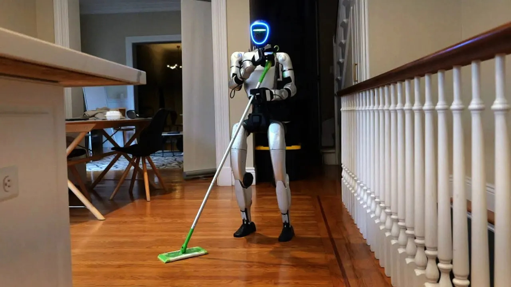

Forget the maid: humanoid robots are now cleaning San Francisco homes
2026, September 3

Forget the maid: humanoid robots are now cleaning San Francisco homes
2026, September 3
United States
Yes—this one is real, although the headline makes it sound a little further along than the technology actually is.A San Francisco robotics startup called Tau Robotics has begun offering a humanoid-robot house-cleaning service for $30 per hour. The service is initially limited to selected customers.
🧹 What can the robots actually do?
The robots are currently capable of relatively straightforward household jobs such as:
Vacuuming floors
Wiping kitchen counters
Taking out rubbish
Moving objects around
Some dishwasher-related tasks
But they aren't yet autonomous robot maids that you can leave alone for three hours while you go shopping.
A human operator currently supervises the robot remotely and can intervene when it encounters something it cannot handle. The AI controls much of the robot's behaviour, but humans are still very much part of the system.
💰 $30 an hour sounds cheap—but there's a catch
The robot itself reportedly costs around $50,000 to manufacture. Tau is therefore essentially testing whether one expensive robot can eventually perform enough cleaning work to make the economics attractive.
Tau's longer-term objective is much more ambitious:
Human operator → AI-assisted robot → increasingly autonomous robot → eventually no human operator.
The company has said it wants to reach approximately 1,000 cleanings per week in San Francisco during 2027, before expanding to other US cities and internationally.
🧠 The difficult part isn't vacuuming
This is where the story gets particularly interesting.
Vacuuming a relatively clear floor is something robots can already do reasonably well. The nightmare scenario is:
"Please clean the kitchen."
A human immediately understands that this might involve finding dishes, picking up a wet towel, moving chairs, opening cupboards, dealing with food spills, recognising fragile objects, loading a dishwasher and putting everything back where it belongs.
For a robot, every one of those is a separate perception, manipulation and decision-making problem.
A UC Berkeley robotics professor quoted by ABC expressed considerable scepticism, particularly about picking objects up from floors and cleaning underneath and around furniture.
👀 And there's a major privacy issue
There's another fascinating—and slightly creepy—aspect.
Because a remotely supervised robot needs cameras to see what it is doing, the human operator can potentially see inside the customer's home through the robot's cameras.
That's a very different privacy proposition from having a conventional cleaner visit your house. It raises questions about:
Where the video is processed and stored
Who can access it
Whether operators can see private areas
Cybersecurity
Whether recordings are retained
🚀 Why this matters
This is another piece of the bigger trend we've been discussing with Wayve's London robotaxis.
The important development isn't that robots can perform a few chores today. It's that AI is increasingly being connected to physical machines capable of operating in the real world.
We're moving from:
AI that writes → AI that sees → AI that drives → AI that manipulates objects → AI that performs physical jobs.
And the combination of falling hardware costs, better AI and massive amounts of training data could make today's rather clumsy demonstrations look very primitive in a few years.
Interestingly, another report this week argues that the eventual winner may not be a single humanoid robot that does everything, but rather an AI "robot brain" coordinating specialised machines such as vacuum cleaners, lawnmowers and appliances.
So the headline is slightly ahead of reality—but not by as much as it would have been even two or three years ago. The $30 robot cleaner is essentially a real-world experiment to find out whether the economics and reliability can eventually work.